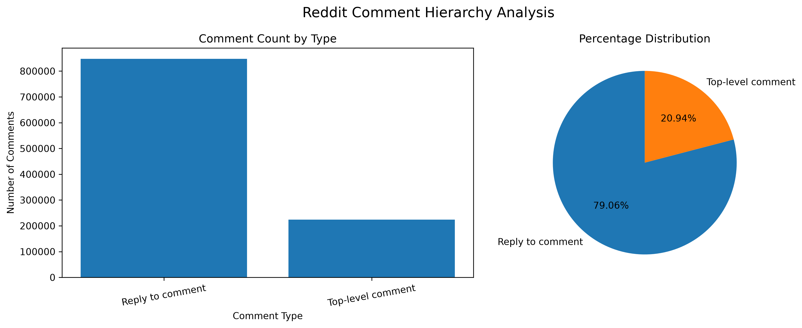
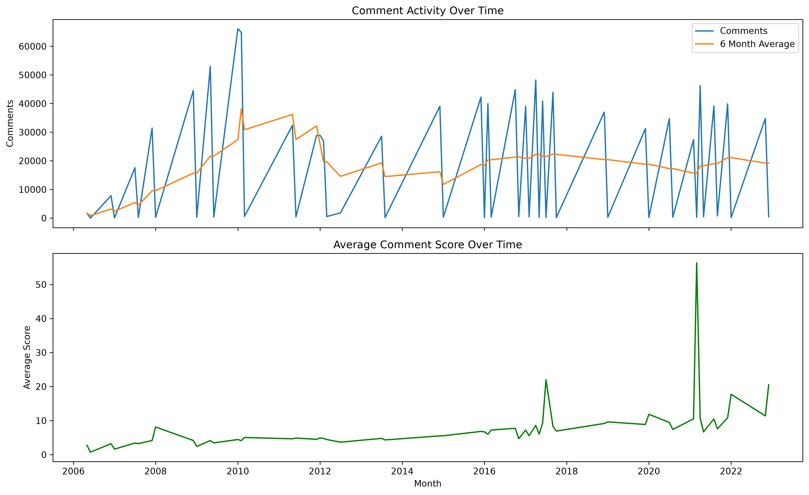
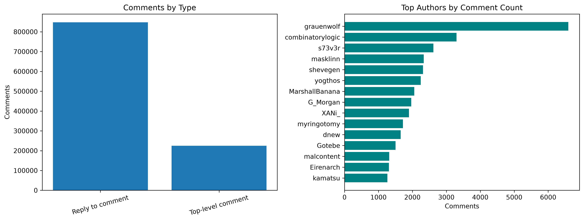
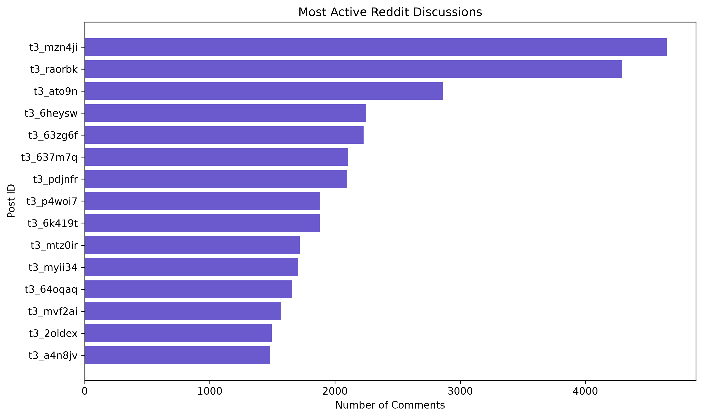
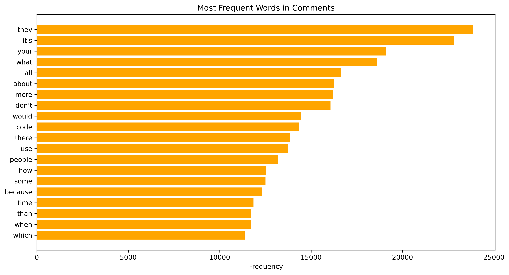
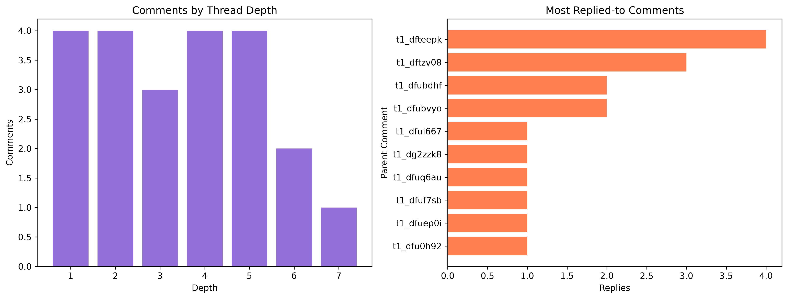
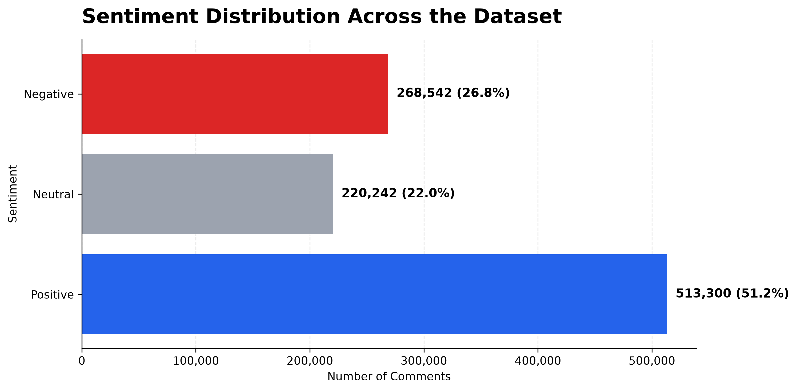
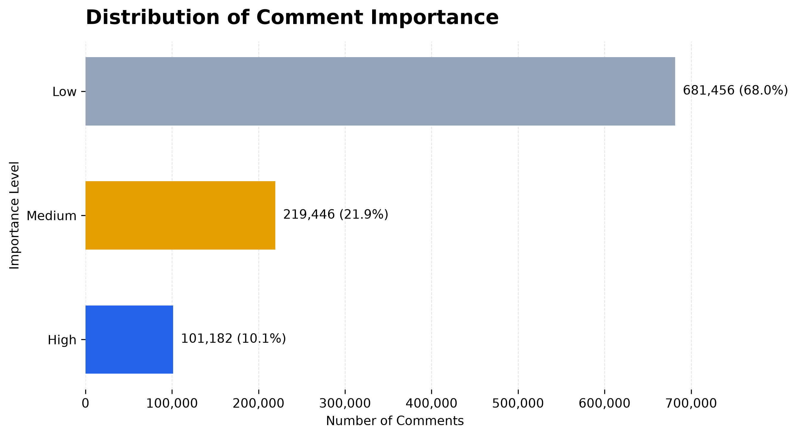
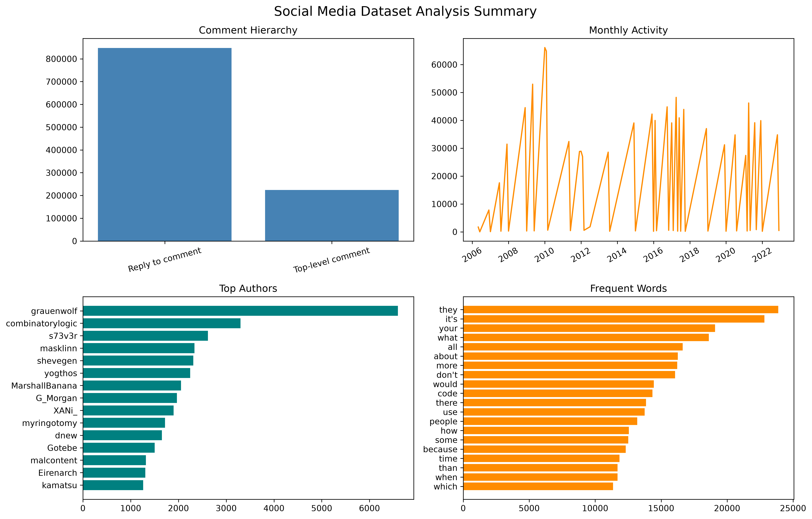
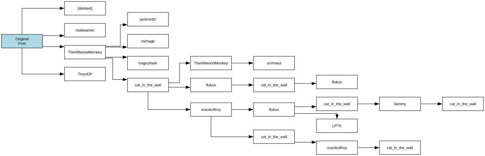

Understand
Study the structure, schema, quality, and scale of 1M+ Reddit comments.
This internship project studies large-scale Reddit comment data and transforms it into visual summaries that help a viewer quickly understand what people discuss, how often they participate, and how conversations branch from one comment to another.
Study the structure, schema, quality, and scale of 1M+ Reddit comments.
Quantify missing bodies, deleted authors, and duplicate rows with SQL.
Measure temporal activity, user engagement, top contributors, and lexical frequency.
Reconstruct recursive trees and classify comments with VADER sentiment and importance scoring.
Social platforms create an enormous and rapidly growing volume of conversation. As the data expands, conventional analysis becomes slower, relationships become harder to trace, and meaningful patterns disappear inside the noise.
Thousands or millions of comments cannot be understood through manual inspection.
Free-form language, links, symbols, deleted records, and missing values require preparation.
A flat table hides the parent–child links that form complete conversation threads.
Numbers alone do not clearly communicate dominant topics or levels of engagement.
“How can a large, complex stream of social media comments be converted into a form that is fast to analyse and simple to understand?”
The notebook translates 1,071,907 raw r/programming comment records into statistical summaries, ten graphical and analytical outputs, and a reconstructed comment hierarchy—making activity, conversation depth, sentiment, and technical importance easy to inspect.
Track monthly comment volume and 51.2% positive sentiment across 16 years.
Rank top contributors (grauenwolf: 6,595 comments) and top-10 active discussions.
Compare 847,486 replies with 224,421 top-level posts, isolating 101,182 high-importance comments.
DuckDB performs direct SQL analysis over the CSV without loading every row upfront.
The hierarchy chart immediately explains where most conversation activity occurs.
The notebook exports reusable PNGs, dashboards, and interactive Graphviz trees into outputs/figures.
A lightweight analytical stack connects a large-scale Reddit dataset to rapid querying, transformation, and publication-ready visual output.
The processed programming CSV contains 1,071,907 records across 43,354 posts and 125,121 non-deleted authors. Its 21 fields support content, engagement, time, sentiment, and recursive parent–child analysis.
id
Unique comment identifier
parent_id
Link to the parent comment or post
link_id
Identifier of the original Reddit post
body
Textual content of the comment
score
Community voting signal
created_utc
Timestamp used for temporal analysis
Download Parquet from Hugging Face and convert to CSV via high-speed DuckDB SQL.
Audit 22 missing bodies, 127,743 deleted authors, and 1,530 duplicate records.
Use SQL aggregations and recursive CTEs to reconstruct conversational hierarchy.
Extract 16-year activity trends, engagement gap, top authors, and common words.
Compute VADER compound sentiment and domain technical keyword importance levels.
Export ten distribution charts, an executive dashboard, and interactive Graphviz trees.
CSV_SOURCE = read_csv_auto(CSV_PATH)
df_preview = duckdb.sql(query).df()
total_rows = duckdb.sql(
"SELECT COUNT(*) FROM read_csv(...)")
WITH RECURSIVE tree AS (
SELECT id, parent_id, 1 AS depth
UNION ALL SELECT c.id, c.parent_id,
t.depth + 1 FROM comments c ...)
analyzer = SentimentIntensityAnalyzer()
sentiment = df["body"].apply(get_sentiment)
importance = df.apply(get_importance, axis=1)
Nine exported charts cover hierarchy, time, engagement, active posts, sentiment, and importance.
Graphviz and interactive SVG node inspector trace thread t3_63bxdl across seven reply depths.
Every figure below comes directly from the executed project notebook: nine Matplotlib & Seaborn analyses and an interactive Graphviz hierarchy generated from the processed dataset.

847,486 comments reply to another comment; 224,421 connect directly to the original post.

Monthly counts are paired with a six-month rolling average, while the lower plot tracks 16-year average comment score dynamics.

grauenwolf leads with 6,595 comments across 1,384 posts. Top-level comments average a 10.75 score versus 5.97 for replies.

Identifies the community's highest-traffic discussion threads, with peak discussions attracting hundreds of nested interactions.

After tokenisation and stop-word exclusion, “they”, “it's”, “your”, “what”, and “code” appear among the leading technical terms.

Quantifies how discussions penetrate deeper into nested reply chains, tracking depth decay and branching patterns.

VADER compound scoring over 1,002,084 comments reveals a constructive community tone, with 513,300 positive expressions.

Multi-factor scoring combining domain keywords (algorithms, architecture, bug fixes), score, and depth isolates 101,182 high-value insights.

Synthesizes the core dimensions—comment hierarchy, longitudinal activity, reply-to-parent engagement, and author prominence—into an executive overview.

Figures shown above are the actual outputs generated from the executed main.ipynb project notebook.
847,486 records are replies to comments—79.06% of the complete dataset.
They average 10.75 points compared with 5.97 for comment replies.
Its 22 comments span seven levels, with four comments at depths 1, 2, 4, and 5.
11.92% of authors are deleted, while duplicate rows represent only 0.14%.
51.2% positive sentiment exceeds negative (26.8%) and neutral (22.0%) tones.
10.1% of comments contain dense technical keywords, high community engagement, and conversational depth.
The project notebook demonstrates an end-to-end analysis of 1,071,907 r/programming comments: direct SQL querying with DuckDB, quality assessment, longitudinal activity and engagement modeling, text-frequency analysis, recursive relationship DAG extraction, and automated sentiment and importance classification.
Ten figure outputs are created: comment hierarchy, activity over time, engagement/authors, active discussions, common words, thread branching, sentiment distribution, importance levels, dashboard, and an interactive tree.
127,743 deleted authors, 22 missing bodies, 1,530 duplicate rows, and standard stop-word boundaries influence nuanced linguistic interpretation.
Expand across subreddits with unsupervised topic modeling (LDA / BERTopic) and live streaming Kafka/WebSocket ingestion.